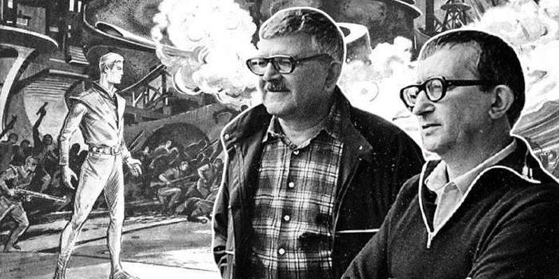
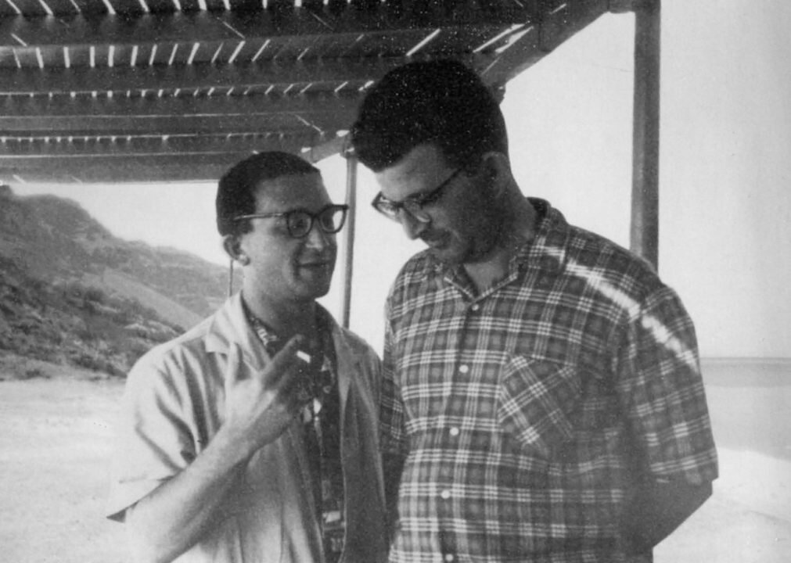
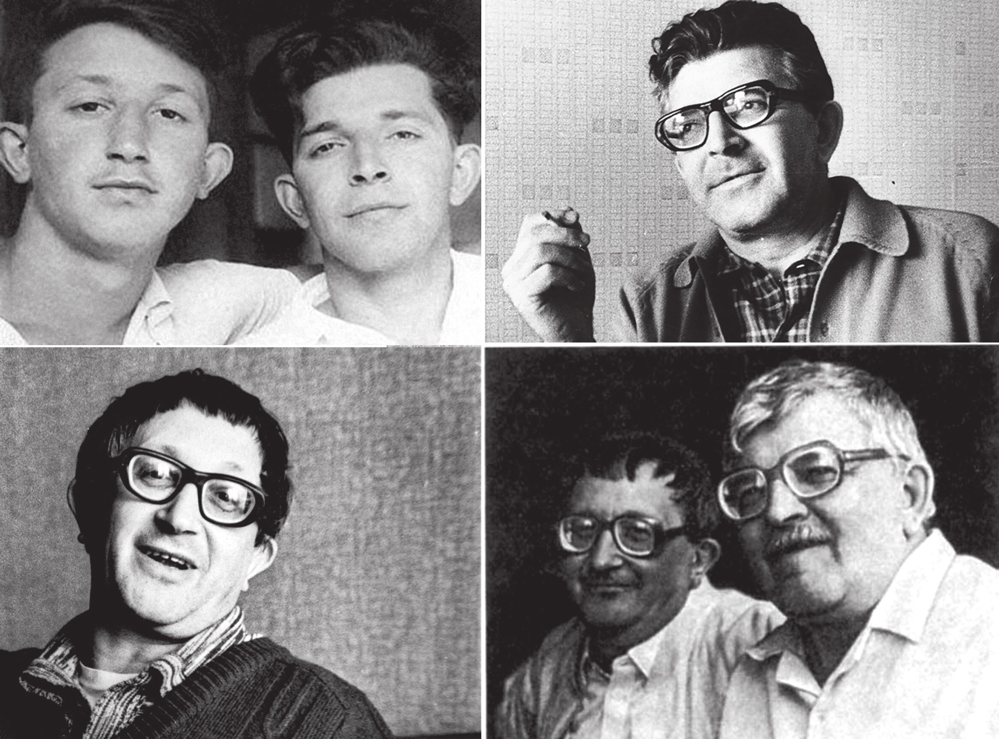
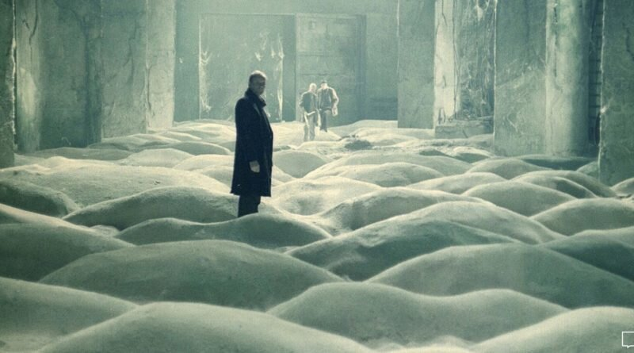

Фантастикой первым увлекся Аркадий. Первые попытки писать НФ он предпринимал еще до войны. Повесть «Находка майора Ковалёва» вместе с другими ранними текстами оказалась утрачена во время блокады Ленинграда.
Первое сохранившееся произведение Аркадия — рассказ «Как погиб Канг», который написан в 1946 году и впервые опубликован в 2001 году.
Старший Стругацкий продолжил писать фантастику во время военной службы («Четвёртое царство», 1952). При переписке с младшим братом он обменивался с ним идеями и замыслами. Так постепенно в творческий процесс оказался втянут и Борис.
Аркадий, надо сказать, прекрасно знал японский. Дело в том, что по образованию старший брат был переводчиком с японского и английского. Он закончил военный институт иностранных языков, а позже служил дивизионным переводчиком на Дальнем Востоке.
Первое совместное произведение Аркадий и Борис написали и опубликовали в 1958 году. Это был рассказ «Извне», переработанный позже в одноимённую повесть. Его опубликовали в культовом тогда журнале «Техника — молодёжи».
Первой книгой братьев стала «Страна багровых туч» (1959). По воспоминаниям, повесть была начата на спор с женой Аркадия Натановича — Еленой Ильиничной. Продолжения этой истории, объединенные с ней общими героями, впоследствии легли в основу Мира Полудня.
Многие современные реалии были предсказаны писателями. Вот лишь некоторые примеры.
Экстремальный спорт. Вспомните «рыбарей» из «Хищных вещей века» (вообще самый актуальный сегодня их роман) с прыжками через высоковольтные провода и тому подобными сумасбродными развлечениями.
Википедия. Всемирное книгохранилище из романа «Понедельник начинается в субботу» и Большой Всепланетный Информаторий в цикле XXII века. Последний, впрочем, выполнял еще функции глобальной телефонно-адресной базы данных.
5-D кинотеатры. «Массовые обонялища и массовые осязалища». Правда, идею братья в основе все же заимствовали у Олдоса Хаксли.
Ружье для пейнтбола. Ляпник, описанный в «Хищных вещах века» (1964 г.). До первой настоящей пейнтбольной битвы оставалось еще 17 лет.
Стругацкие сделали популярным выражение «И ежу понятно». Исходно оно взято из стихотворения Маяковского («Ясно даже и ежу — / Этот Петя был буржуй»). Но настоящая популярность к нему пришла после повести «Страна багровых туч».
Писатели известны во всем мире и число языков, на которые переведены их книги превышает 40 в 33 странах мира (всего 500 изданий). Помимо рассказов, повестей и романов, они отметились и как успешные сценаристы.
По сюжетам Стругацких снято по меньшей мере 17 фильмов. Среди них — «Сталкер» Тарковского, «Дни затмения» Александра Сокурова, «Гадкие лебеди» Константина Лопушанского, наконец, «Обитаемый остров» Федора Бондарчука.
Борис Натанович пережил брата на 21 год (Аркадий умер в 1991-м, Борис — в 2012-м). Могил у Стругацких нет. Их тела по завещанию кремировали и развеяли с вертолета над точно заданными координатами (Аркадий — над Рязанским шоссе в Москве, Борис — над Пулковскими высотами в Ленинграде).
—Статья книжного сообщества, Издательство АСТ